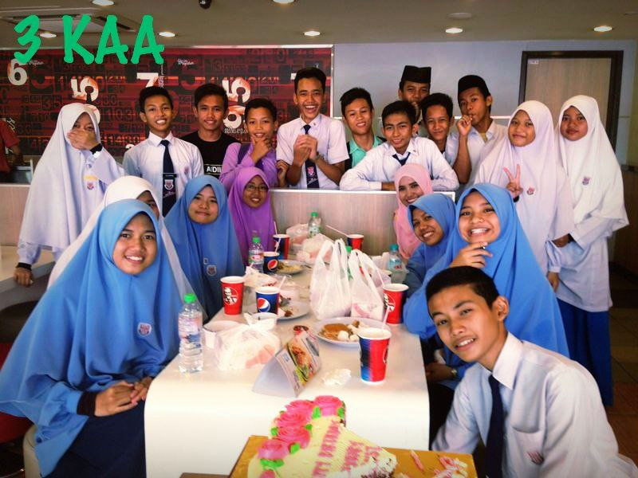

EXPERIENCE : SCHOOL
My journey when I was at school!
- Primary School 12/12/2011
- Secondary School 12/12/2016

My Classmate!
Primary School
On that day, my classmates and I, celebrate Teacher's Day at KFC near our school. For me, Form 3 is my precious memories during my secondary school journey. 2014 is my turning point because my bestfriend, move to another school. I got my result PT3 result and many friends start thier own path away. Thank you Cikgu Daliya for always make time and love us as always!

Gathering Time!
Pantai Remis, Kuala Selangor
During 2016, my friends and I able go to Pantai Remis to enjoy our last day at school. This is a sweet memory for me because we share our story until late evening. 2016 is a very asd year because that is our last school experience before going to tertiary education which is more tough and difficult. But, all of us success to enter to university based on our field and interest on courses.

My Bestfriends
My Second Family
These are my bestfriends from secondary until now. They are Nurin, Atikah, Farzana and me. With them, I always can be myself and laughing without limit. Since we all at home now, we always outing together every month, but after MCO we cannot make it. This is so sad for us and all people all over the world. We cannot release our stress by going out to enjoy as usual.